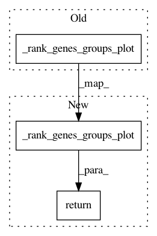

5c1416f33d626ed7b7a6d3288cab6d12af454fa3,scanpy/plotting/tools/__init__.py,,rank_genes_groups_matrixplot,#Any#Any#Any#Any#Any#Any#Any#,484
Before Change
Are passed to `scanpy.api.pl.matrixplot`.
_rank_genes_groups_plot(adata, plot_type="matrixplot", groups=groups, n_genes=n_genes,
groupby=groupby, key=key, show=show, save=save, **kwds)
@doc_params(show_save_ax=doc_show_save_ax)
def rank_genes_groups_violin(
After Change
Are passed to `scanpy.api.pl.matrixplot`.
return _rank_genes_groups_plot(adata, plot_type="matrixplot", groups=groups, n_genes=n_genes,
groupby=groupby, key=key, show=show, save=save, **kwds)
@doc_params(show_save_ax=doc_show_save_ax)
def rank_genes_groups_violin(
In pattern: SUPERPATTERN
Frequency: 4
Non-data size: 3
Instances
Project Name: theislab/scanpy
Commit Name: 5c1416f33d626ed7b7a6d3288cab6d12af454fa3
Time: 2018-09-03
Author: fidel.ramirez@gmail.com
File Name: scanpy/plotting/tools/__init__.py
Class Name:
Method Name: rank_genes_groups_matrixplot
Project Name: theislab/scanpy
Commit Name: 5c1416f33d626ed7b7a6d3288cab6d12af454fa3
Time: 2018-09-03
Author: fidel.ramirez@gmail.com
File Name: scanpy/plotting/tools/__init__.py
Class Name:
Method Name: rank_genes_groups_dotplot
Project Name: theislab/scanpy
Commit Name: 5c1416f33d626ed7b7a6d3288cab6d12af454fa3
Time: 2018-09-03
Author: fidel.ramirez@gmail.com
File Name: scanpy/plotting/tools/__init__.py
Class Name:
Method Name: rank_genes_groups_stacked_violin
Project Name: theislab/scanpy
Commit Name: ee1ec7eb18b17d6d7cf28be3817e5dda6c0e13a6
Time: 2018-08-29
Author: fidel.ramirez@gmail.com
File Name: scanpy/plotting/tools/__init__.py
Class Name:
Method Name: rank_genes_groups_heatmap